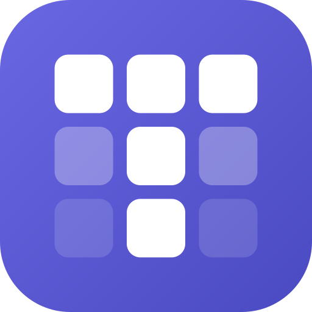

Tessera
Your notes, your server.
Notion's power, Obsidian's freedom.
- Local-first · works offline
- Real-time collaboration
- Self-host in one command
- Open source · MIT

Your notes, your server.
Notion's power, Obsidian's freedom.